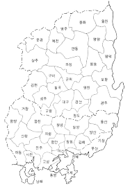

양방향 번역
경상도 ↔ 표준어. 한 번의 토글로 방향 전환. 짧은 한 줄도 전체 문맥도 OK.
사투리 한 줄에 담긴 걱정·고마움·미안함을 AI가 해석하는 한국어 NLP 데모. 가족 사이의 거리를 좁히는 가장 짧은 다리.

“밥은 묵었나?” 한 마디 뒤에 보고 싶다는 마음이 숨어 있고, “마, 됐다”의 무뚝뚝함 안에 미안함이 있다. 표현은 짧지만 마음은 길다 — 그래서 자주 오해된다.
단어 하나만 바꾸면 의미는 사라진다. 진짜 메시지는 맥락·감정·관계에 있다.
의미는 맞지만 마음은 사라졌다.
단어 + 속마음 + 감정 라벨.
입력 한 줄에 — 번역 / 진짜 마음 / 감정 라벨 / 답하는 팁 네 가지가 1초 안에 돌아옵니다.
잘 지내는지 걱정돼서, 보고 싶다는 뜻이야.
경상도 어른이 자주 쓰는 어투. 짧고 무뚝뚝해서 오히려 진심처럼 들려요.
경상도 ↔ 표준어. 한 번의 토글로 방향 전환. 짧은 한 줄도 전체 문맥도 OK.
화자의 진짜 마음을 1~2문장으로. 감정 라벨과 “이렇게 답해보세요” 팁까지.
익명 세션 + 스레드 단위 채팅 저장. 다음 메시지를 더 정확하게 해석.
App Router · 서버 라우트 · shadcn/ui · Tailwind. 단일 코드베이스로 클라/서버.
한국어 강한 멀티모달 LLM. JSON 응답 모드 + 안전 파서로 안정성 확보.
Prisma 스키마. AnonymousSession → ChatThread → ChatMessage 3계층.
로컬은 Docker Compose로 pgvector 띄우고, 배포는 Vercel 한 번에.
비밀 소스는 프롬프트 — 경상도 특유의 “무뚝뚝함 뒤의 따뜻함”을 명시적으로 학습 지시. 모델이 코드펜스를 씌워도 살아남는 방어형 JSON 파서.
전라 · 제주 · 충청. 같은 프롬프트 패턴을 지역별로 튜닝.
STT로 부모님 음성을 그대로 받아서 “마음”까지 옮김.
한 대화방에 여러 가족이 들어와 서로의 메시지를 해석.
궁극의 목표 — “사랑한다”라고 말하지 않아도 사랑이 전해지는 채팅앱.
“사랑한다” 한 마디가 어렵다면, 우리가 대신 옮겨줄게요. 해커톤 데모, 오늘부터 만져보세요.